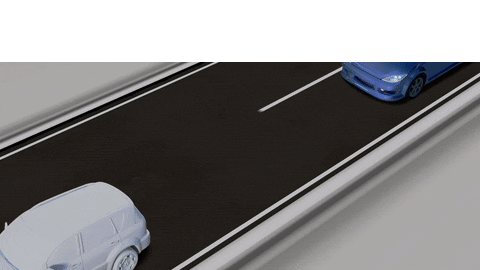

El Sensor Táctil es un sensor analógico que puede detectar el momento en el que se presiona y se libera el botón del sensor. Esto significa que el Sensor Táctil puede programarse para actuar según tres condiciones: presionado, liberado o en contacto (tanto presionado como liberado). Con la información del Sensor Táctil, se puede programar un robot para ver el mundo como lo haría una persona no vidente, es decir, extendiendo un brazo y respondiendo cuando toca algo (presionado). Puede construir un robot con un Sensor Táctil presionado contra la superficie. Luego, puede programar el robot para que responda (se detenga) cuando esté a punto de pasar el borde de la mesa (cuando el sensor se libera). Un robot de pelea puede programarse para continuar empujando hacia adelante en dirección a su oponente hasta que este se retire. Ese par de acciones, presionado y liberado, constituyen el estado “En contacto”. Diferentes estados del Sensor Táctil: Presionado Liberado En Contacto Se le puede incorporar al sensor un eje LEGO para incrementar la longitud efectiva y detectar presiones a una mayor distancia.
